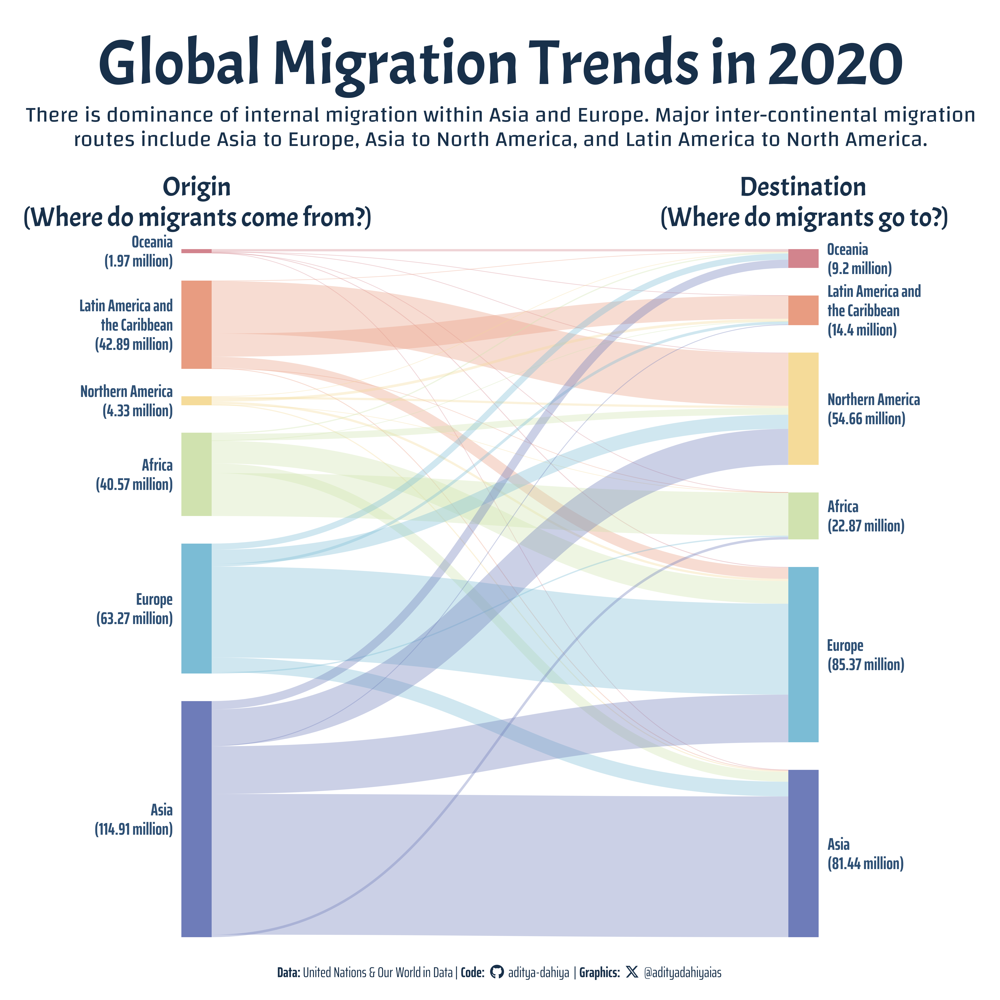

Migration: Internal and Inter-Continental Flows (2020)
The Sankey diagram visualizes the migration flows in 2020, highlighting the dominance of internal migration within Asia and Europe. Major inter-continental migration routes include Asia to Europe, Asia to North America, and Latin America to North America, illustrating key pathways in global population movement.
A4 Size Viz
Our World in Data
Public Health
{ggsankeyfier}
Author
Aditya Dahiya
Published
July 25, 2024
Migration: Internal and Inter-Continental Flows (2020)
The data for this Sankey diagram, depicting migration flows in 2020, is sourced from the United Nations Department of Economic and Social Affairs (UN DESA) and processed by Our World in Data. It includes comprehensive international migrant statistics, standardized and refined through several processing steps to ensure accuracy and clarity. The graphic highlights key findings, showing the dominance of internal migration within Asia and Europe and significant inter-continental routes from Asia to Europe, Asia to North America, and Latin America to North America, reflecting crucial patterns in global population movements. For more details, visit the UN DESA International Migrant Stock page.

This graphic visualizes global migration flows for the year 2020 using data sourced from the United Nations Department of Economic and Social Affairs (UN DESA) and processed by Our World in Data. It highlights both internal and inter-continental migration patterns through a Sankey Diagram.
How I made this graphic?
Getting the data
Code
# Data Import and Wrangling Toolslibrary(tidyverse) # All things tidylibrary(owidR) # Get data from Our World in R# Final plot toolslibrary(scales) # Nice Scales for ggplot2library(fontawesome) # Icons display in ggplot2library(ggtext) # Markdown text supportlibrary(showtext) # Display fonts in ggplot2library(colorspace) # To lighten and darken colourslibrary(patchwork) # Combining plotslibrary(ggsankeyfier) # Sankey Diagrams with ggplot2# Getting the data# search1 <- owid_search("migrant")# rawdf <- owid("migrant-stock-total")url1 <-"https://www.un.org/development/desa/pd/sites/www.un.org.development.desa.pd/files/undesa_pd_2020_ims_stock_by_sex_destination_and_origin.xlsx"rawdf2 <- openxlsx::read.xlsx(xlsxFile = url1,sheet ="Table 2",startRow =10,colNames =TRUE)
Data Wrangling
Code
sel_continents <-c("AFRICA", "ASIA", "EUROPE", "LATIN AMERICA AND THE CARIBBEAN", "NORTHERN AMERICA", "OCEANIA")df1 <- rawdf2 |># Remove minor duplication of "Australia.And.New.Zealand"select(-12) |> janitor::clean_names() |>as_tibble() |>rename(origin = region_development_group_of_destination) |>mutate(origin =str_squish(origin)) |>select(-c(x1, x3, x4)) |>pivot_longer(cols =-origin,names_to ="destination",values_to ="value" ) |>filter(origin %in% sel_continents) |>mutate(origin =str_to_title(origin),destination = snakecase::to_title_case(destination),destination =str_remove_all(destination, "\\d+") ) |>filter(destination %in% snakecase::to_title_case(sel_continents)) |>rename(to = origin,from = destination )# The final tibbles to use for plottingplotdf1 <- df1 |>mutate(fill_var =if_else( from == to,"Within Continent","Inter-Continental" ) ) |>pivot_longer(cols =c(from, to),names_to ="connector_var",values_to ="node_var" ) |>relocate(node_var, connector_var, value) |>mutate(x_var =case_when( connector_var =="from"~1, connector_var =="to"~2,.default =NA ) ) |>mutate(node_var =if_else( node_var =="Latin America And The Caribbean","Latin America and the Caribbean", node_var ))# Arranging the Continents in proper orderlevels_continents <- plotdf1 |>group_by(node_var) |>summarise(value =sum(value)) |>arrange(desc(value)) |>pull(node_var)# The Flows to highlight in the final graphictop_flows <- plotdf1 |>filter(fill_var =="Inter-Continental") |>slice_max(order_by = value, n =6) |>distinct(value) |>pull()plotdf2 <- plotdf1 |>mutate(node_var =fct(node_var, levels = levels_continents),colour_var =if_else( value %in% top_flows,"a","b" ) )plotdf3 <- plotdf2 |>group_by(connector_var, x_var, node_var) |>summarise(value =sum(value) ) |>ungroup() |>mutate(label_value =paste0(round(value/1e6, 2), " million") ) |>select(-value)plotdf4 <- plotdf2 |>left_join(plotdf3)# Another Analysis Sub-Region Wise: Didnt work out! So, skip it.# df3 <- rawdf2 |> # select(-12) |> # as_tibble() |># slice(23:n()) |> # rename(origin = `Region,.development.group.of.destination`) |> # select(-c(X1, X3, X4)) |> # mutate(origin = str_squish(origin)) |> # mutate(# group_var = if_else(# origin %in% sel_continents,# origin,# NA# )# ) |> # relocate(group_var, .after = origin) |> # fill(group_var) |> # group_by(group_var) |># mutate(prop_var = WORLD / sum(WORLD)) |># relocate(prop_var, .after = group_var) |># ungroup() |># pivot_longer(# cols = -c(origin, group_var, WORLD),# names_to = "destination",# values_to = "value"# ) |> # filter(origin != group_var) |> # mutate(destination = snakecase::to_title_case(destination))# # # df_to_join <- df3 |> # distinct(origin, group_var) |> # rename(# destination = origin,# group_var_dest = group_var# )
Visualization Parameters
Code
# Font for titlesfont_add_google("Acme",family ="title_font") # Font for the captionfont_add_google("Saira Extra Condensed",family ="caption_font") # Font for plot textfont_add_google("Changa",family ="body_font") showtext_auto()# Colour Palette# Background Colourbg_col <-"white"text_col <-"#2e5075"text_hil <-"#18304a"# Base Text Sizebts <-80plot_title <-"Global Migration Trends in 2020"plot_subtitle <-str_wrap( glue::glue("There is dominance of internal migration within Asia and Europe. Major inter-continental migration routes include Asia to Europe, Asia to North America, and Latin America to North America." ),100 )str_view(plot_subtitle)data_annotation <-"About the Data: The data comes from the United Nations (UN) and the United Nations Department of Economic and Social Affairs (UN DESA) for the year 2020."# Caption stuff for the plotsysfonts::font_add(family ="Font Awesome 6 Brands",regular = here::here("docs", "Font Awesome 6 Brands-Regular-400.otf"))github <-""github_username <-"aditya-dahiya"xtwitter <-""xtwitter_username <-"@adityadahiyaias"social_caption_1 <- glue::glue("<span style='font-family:\"Font Awesome 6 Brands\";'>{github};</span> <span style='color: {text_hil}'>{github_username} </span>")social_caption_2 <- glue::glue("<span style='font-family:\"Font Awesome 6 Brands\";'>{xtwitter};</span> <span style='color: {text_hil}'>{xtwitter_username}</span>")plot_caption <-paste0("**Data:** United Nations & Our World in Data | ","**Code:** ", social_caption_1, " | **Graphics:** ", social_caption_2 )rm(github, github_username, xtwitter, xtwitter_username, social_caption_1, social_caption_2)